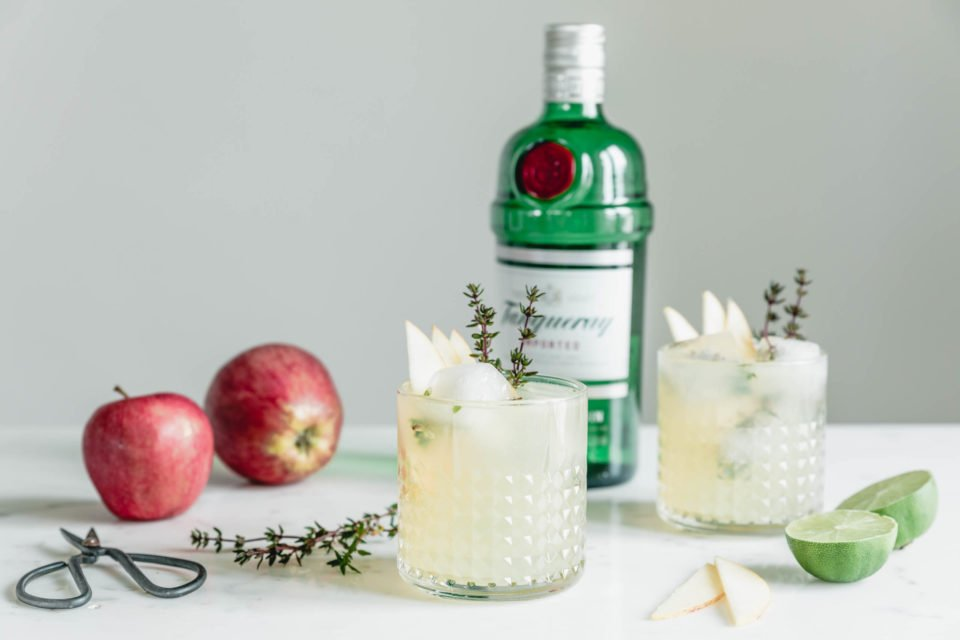

Soho Sling - a gin cocktail with thyme

A cocktail for winter season
I know this one seems a bit odd but trust me...it's awesome!
This cocktail tastes like Christmas. You can also serve it without alcohol.
Ingredients
- 5 cl Gin
- 4 cl unfiltered Apple Juice
- 1/2 Lime
- 5 cl Ginger Beer
- 2 Branches of Tyme
- 3 Apple Slices
For a alcohol free variant we use 5 cl apple juice & 9cl ginger beer.
Instructions
- Give ice into your glass.
- Pour gin, apple juice, lime juice and ginger beer in the glass.
- Rub the thyme between your hands and put it in the glas. Style it up with
the apple slices and voilà.